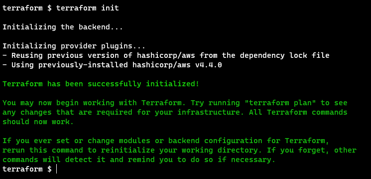
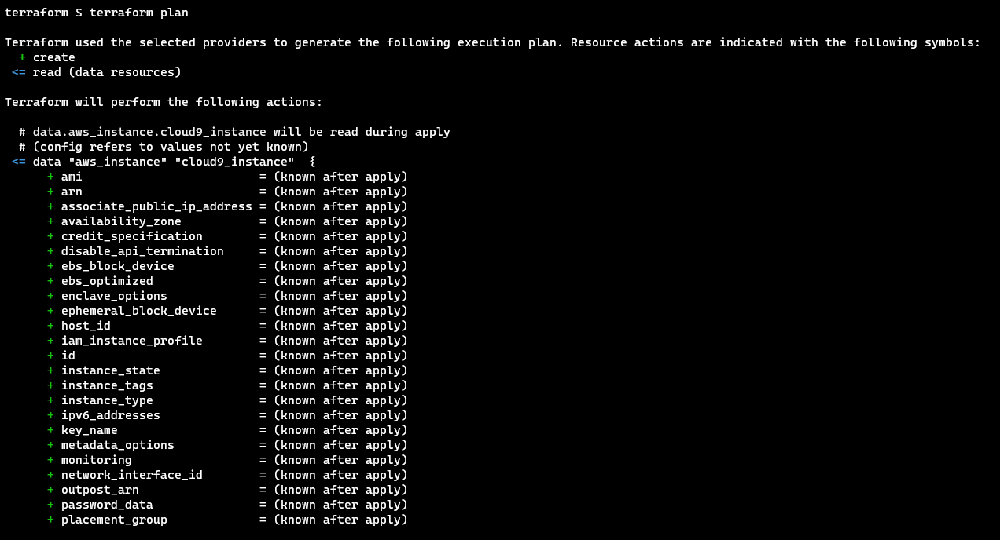
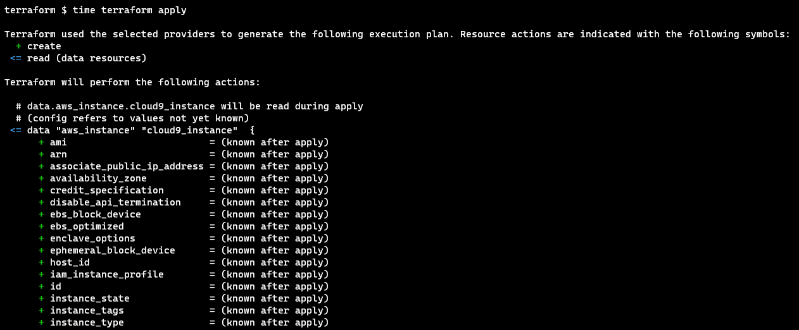
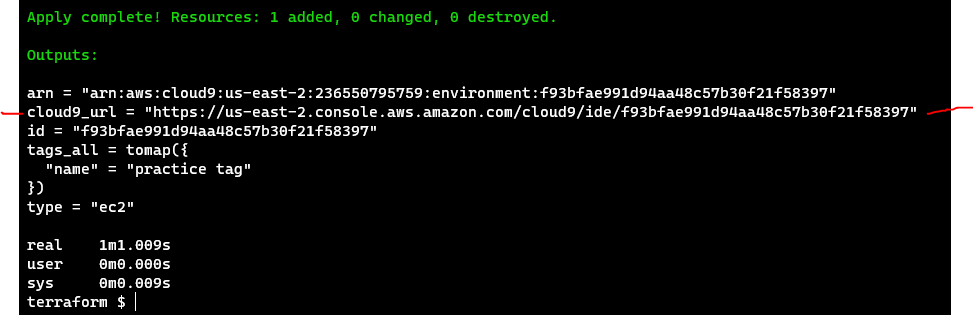
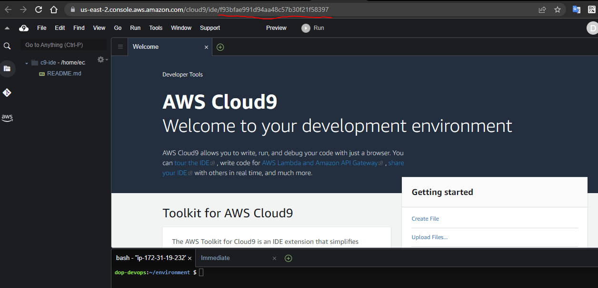

AWS Cloud9 IDE - Terraform
Description
This project was originally described in The Cloud Resume Challenge Book, using Cloudformation to create an AWS Cloud9 IDE, but I expanded it to use other technologies, such Terraform and Python / Boto3 (eventually Golang), for fun and for personal development.
What I liked about The Cloud Resume Challenge is that it only gave you the specifications for the end result, not detailed steps on how to complete it. In this regard, it more closely resembled the type of assignment a person would receive at their job.
Technologies Used
- AWS Cloud9
- Terraform
Results
With an active AWS account, the user can spin up a browser based AWS Cloud9 IDE in about 1 minute.
1-Click Deployment
A 1-click deployment is not applicable for this project.
Diagram
TODO: Add diagram
Video
TODO: Add video
Images
    
Code
The source code is available here.
Write-up
I will keep this short. I learned a lot about Terraform to complete this project, and I have a lot more Terraform to learn. I have found it to be a very productive tool for provisioning infrastructure. I really like that it takes a uniform approach to provisioning multi-cloud resources, and I can't wait to start playing around with Azure and GPC as well.